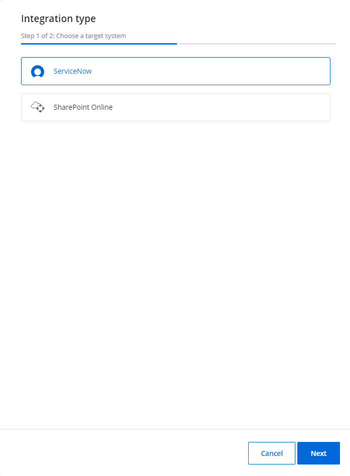
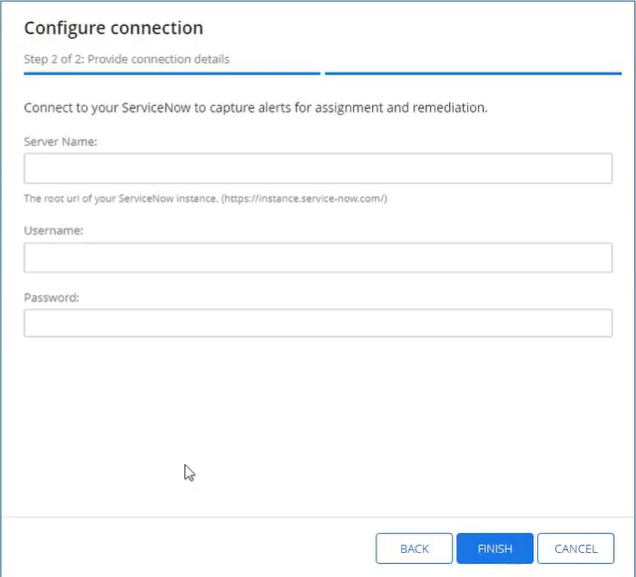
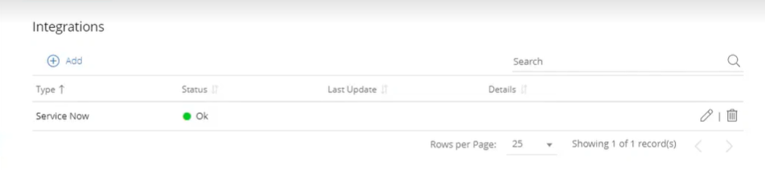
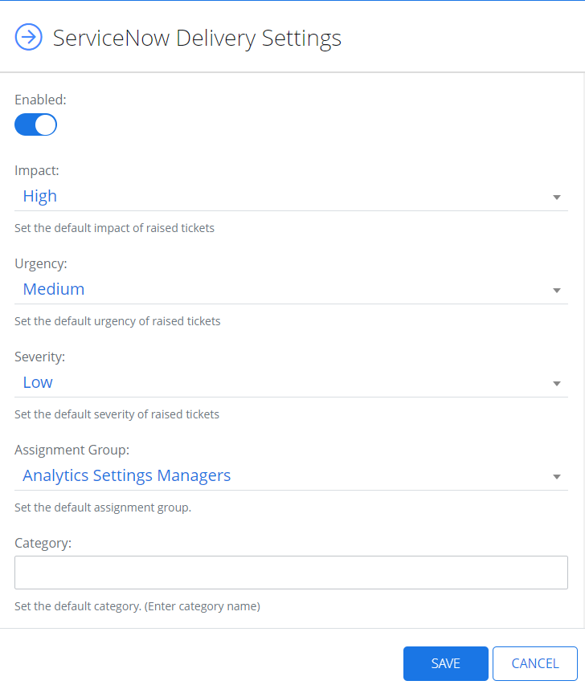

ServiceNow
ServiceNow is a flexible platform for Managed Service Providers that provides integrated services. Integrated with Netwrix 1Secure, ServiceNow allows to deliver an alert as a ticket or a work note for help desk or tech services. Once a ticket is created, it is assigned to an IT agent to be resolved.
In ServiceNow, you can create a profile for your Managed Service Provider and then implement the delivery settings in Netwrix 1Secure. The tickets shall be delivered to specific assigned work group.
Image keys:
| Icon | Description |
|---|---|
 |
Edit Icon. Click the Edit Icon to edit the settings of the integration type. |
 |
ServiceNow Icon. Click the ServiceNow icon to make the settings for ServiceNow. |
 |
Bin Icon. Click the Bin icon to delete the ServiceNow integration |
Add a ServiceNow Integration System
Follow the steps to add a ServiceNow integration system.
Go to Configuration > Integrations and click the Add icon to add the system.
In the displayed Integration type window, click ServiceNow and click Next.
In the Configure connection window, specify the required boxes - Server Name, Username, and Password.
First, you need to configure your account at https://www.servicenow.com/. See the https://docs.servicenow.com/en-US/bundle/vancouver-platform-administration/page/administer/users-and-groups/task/t_CreateAUser.html help page for an additional information.
View Fields Here:
- Server Name – The root url of your ServiceNow instance (https.//intance.service-now.com)
- Username - Username you create at https://www.servicenow.com/
- Password – Password you set up when creating a service account at https://www.servicenow.com/
Click Finish.
The ServiceNow profile is added now. The status displays "Ok" in green.
Click the Edit icon or the Bin icon to edit or delete the integration.
Manage Delivery Settings
Follow the steps to manage delivery settings for ServiceNow.
Navigate to Configuration > Alerts.
Click the Service Now icon* under Delivery Settings. The ServiceNow Delivery Settings panel displays.
Specify the Assignment Group, which should receive the tickets.
Toggle on the Enabled field to enable the ServiceNow delivery.
Specify the required parameters, such as impact, severity, and urgency of raised tickets.
Optionally, toggle on the Work Notes field to assign alerts detail to Work notes column in ServiceNow. See the https://docs.servicenow.com/bundle/vancouver-servicenow-platform/page/administer/state-flows/concept/c_WorkNotes.html topic for additional information.
Optionally, toggle on the Comments field to specify the alerts detail in the Comments column in ServiceNow.
Click Save.
The user account configured for the integration must have the Information technology infrastructure library (ITIL) role assigned to it in ServiceNow. Users without this role are unable to assign urgency/severity to an incident.
See the https://www.servicenow.com/products/itsm/what-is-itil.htm article for additional information.